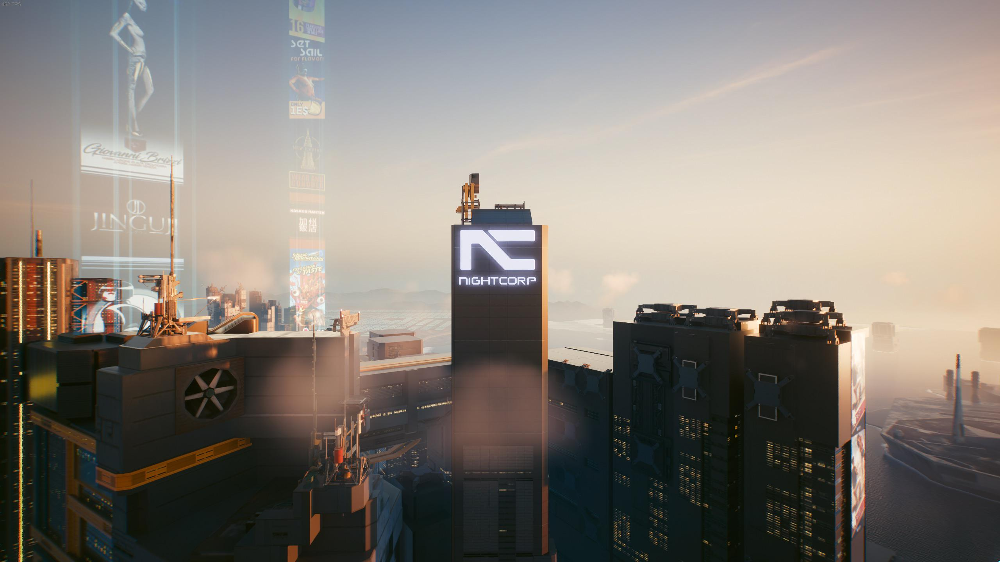
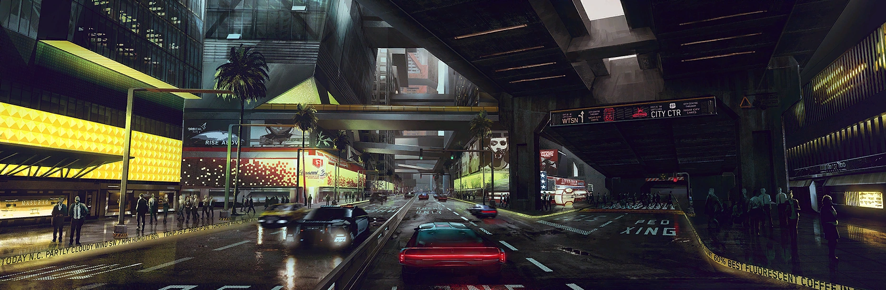

The City of Dreams was founded in the 1990s by visionary
industrialist Richard Night. When the world of
late 20th century plunged into chaos, Night envisioned a modern
metropolis free from crime, poverty and corruption. Corporate
partners Arasaka, EBM, and Petrochem helped him realize this
vision, investing in the foundation of what would become the Free
City of Night City. The city would develop into a haven for young
idealists and a beacon for others who sought to fulfill their own
dreams. And although Richard fell to assassins and many new
generations seeking fame, fortune and freedom have suffered their
own series of setbacks, the city's legendary status endures today.
Night City has wide streets and dense urban skyscrapers which are
home to millions of residents. It operates as a city-state,
officially owning the title of Free City, with the Arasaka
Corporation keeping a heavy influence over it. The metropolis is
considered a thrilling and exciting location to visit, as well as
an interesting and vibrant place to live for those of means, and a
hellscape to the city's disenfranchised. Its world famous slogan
is "The City of Dreams", originally changed from "City on the Edge
of Tomorrow." In 2077.
Geography
After the Time of the Red and the Unification War, Night City was
mostly rebuilt and had maintain its autonomy.The city was divided
into six districts — each with their own environment and denizens
— and 16 official sub-districts. The total size of the city was
around 75.42 km².
District & Locations
City Center
City Center is the
central business district (CBD) of Night City.
City Center is the commercial hub of the Night City
metropolitan area. Most of the city's corporations
operate from here.
Heywood
Heywood is a neighborhood of contrast—from modern
skyscrapers and parks in the north, to dangerous,
inhospitable slums in the south. It's "the biggest
bedroom in Night City", where gangs like Valentinos and
6th Street get down to business—legal and illegal alike.
Pacifia
Pacifica could've been Night City's money-making
vacation resort, but once the investment dried up it
became a husk left to rot. Now, instead of tourists, the
district is overrun by gangs and violence, with The
Voodoo Boys protecting the community forsaken by NCPD.
Santo Domingo
Santo Domingo is one of Night City's oldest districts.
Corporations use it as a testing ground for industrial
projects, destroying old factories just to build new
ones, while residents scrape a desperate living in
crowded megabuildings — wishing for something better.
Watson
Watson used to have it all - nightclubs, skyscrapers,
corporate offices, a top-end medcenter — but economic
disaster put an end to all that. Now, it's known as "the
bad neighborhood of Night City," the kind of place that
suits gangs like Maelstrom and Tyger Claws down to the
ground.
Westbrook
Westbrook is considered by many to be the best place to
live and have fun in Night City. If you've got eddies,
you come here to spend them. And if you don't? Well,
take out a loan and pretend you're on top of the world —
even for just one glorious night.
Climate
Night City's Northern Californian location gives it one of the
most pleasant climates in the Western part of the NUSA. Normal
temperatures range from the mid 80°F to low 50°F (26°C to 10°C),
with misty white fog blanketing the City in the early mornings
and evenings. Night City receives around 21 inches of rainfall
each year. Of this water that drops, around 35% contains toxic
chemicals which is higher than the current government standards
for the United States produced vehicles, clothing, and food. On
average, if a person's vehicle and clothing are rated above SP
12, adverse effects (staining and ablation) will be negligible.
When one visits Night City, they should wear light to medium
weight clothing, with an optional light armor jacket or
ballistic-cloth overcoat. A filter mask and supplemental oxygen,
hedges against inversion smog and acid rain fog, are highly
recommended as well. That being said, acid-proof slickers,
umbrellas, and air masks are readily available from the sidewalk
vendors or smaller street stores during smog warning periods.
The average cost of these items can range from €$20 to €$35.
Economy
Business Sector
The business sectors of Night City include manufacturing
industries, international trade and commerce, information
services, electronic technologies, security services, and so on.
While cities like Tokyo, New York or Singapore have been overrun
by corporations by the 2000s, Night City was the only city in
the world that was built by the corporations. Some of the
biggest megacorporations in the world contributed to the
construction of the city and many were located in the Corporate
Center in 2020. After the war, and the subsequent reconstruction
of Night City, Corpo Plaza became a symbol of the megacorps'
grasp on the city.
Corporations
Night City was founded through the efforts of a partnership of
five major corporations, and as of 2077 it continues to serve as
a haven for numerous global corporations due to its status as a
free city and pro-corporate government policies such as a 0.7%
tax rate on corporate profits.Night City's biggest ally is
Arasaka, which provides employment for many citizens and ensures
the city remains independent by backing it with its military
strength.
Arasaka Corporation
The Arasaka Corporation is a world-wide megacorporation
dealing in corporate security, banking, and manufacturing. It
is one of the most influential megacorporations in the world.
The company is also the largest distributor of Japanese-made
merchandise throughout the American, European, and Asian
markets.
Militech
Militech International Armaments is a
megacorporation specializing in weapons manufacturing and
private military contracting. Militech is one of the world's
largest manufacturers of weapons and military vehicles, with
facilities on every continent
Euro Business Machines
Euro Business Machines Corporation(EBM) was a megacorporation that generalized
in the manufacture of computer products, information
technology and electronics. EBM had a highly influential
market presence, along with some of the largest employee and
troop counts.
Night Corp
Night Corporation (commonly stylized as Night Corp) is
headquartered in Night City. Night Corp is a unique enterprise
as it puts its full attention on Night City and its affairs.
The company is the largest contractor of public procurements
within the boundaries of Night City.
Petrochem
Petrochemical Associates International is a
megacorporation whose primary focus is the petrochemical
industry. Petrochem is the world's largest producer of the
synthetic alcohol fuel CHOOH2 (under license from
Biotechnica), the primary fuel source for the mid-21st
century. Petrochem control millions of acres of arable land
across the NUSA.
X
ARASAKA CORPORATION
The Arasaka Corporation is the longest-operating megacorp in the
world. Its origins date back to the mid-20th century when a young
Saburo Arasaka inherited his father's nascent company,
transforming it into a global leader in security. Today, the
Arasaka Corporation is known as an arms-manufacturing giant that
has had its hands in military conflicts across all continents. Due
to the latest advances in technology and the company's seemingly
unlimited capital, Arasaka is poised to achieve its political
goals on a massive scale. Arasaka's soldiers and agents are known
not only for their excellent training, but also for their
steadfast loyalty to corporate values and CEO Saburo Arasaka
himself, who, despite his advancing age, continues to govern the
corporation with an iron fist. Even discussions of a succession
plan must be kept to a whisper, because no one would dare openly
question the authority of the world's greatest weapons empire...
Almost no one.
X
MILITECH
Militech International Armaments is one of the largest, most
powerful corporations in the world. Known mainly in the NUSA for
their support of the federal government, they provide both
manpower and arms to the regime, including weapons and specialist
military gear. Militech's contract for the NUSA is controversial
in some political circles: Militech has been accused of attempting
to create a monopoly, while the clear connections between former
Militech CEO and current NUSA president Rosalind Myers and the
corporation's board have only exacerbated corporate and diplomatic
tensions.
Militech also operates in the private sector, providing security
as well as defensive and offensive combat services. The
corporation offers clients the latest equipment, skilled staff and
trained, well-equipped agents to get the job done. In addition,
the megacorp also develops and produces its own firearms, drones,
implants, even vehicles suitable for land, air and sea combat.
X
Euro Business Machines
Euro Business Machines Corporation (EBM) was a megacorporation
that generalized in the manufacture of computer products,
information technology and electronics. EBM had a highly
influential market presence, along with some of the largest
employee and troop counts.
EBM's power and stature afforded access to the highest levels of
military technology, with a top secret underground medical,
research and training facility hidden in the Alps. EBM also
maintained a small orbital research facility with about thirty
researchers and ten soldiers.
X

NIGHT CORP
If there's one thing Night Corp is known for, it's secrecy nobody
really knows how much the corporation is worth, what its main
source of revenue is, nor how many people it employs.
The corporation is part Richard Night's legacy, the visionary
industrialist who laid the bedrock of Night City. It was founded
by Night's widow, Miriam, who used the money her late husband left
behind to build it from the ground up and structure it around
Night's ideals and principles . For many years, Miriam was the CEO
of Night Corp before the helm was taken over by much less
competent figures, who ultimately lost the race with Arasaka and
Militech both of whom ultimately came to wield the most power in
Night City. Now, Night Corp's glory days are long behind it. After
years of progressive degeneration, Night Corp's influence waned to
nearly non-existent. Still, outside of managing its own capital,
Night's successors have maintained a significant say in matters
pertaining to public administration and pro-social causes. Public
road works, construction and conserving institutions for the
public good, revitalizing the Maglev system these are only a
handful of projects financed by Night Corp.
More well-known beneficiaries include the NCPD and MaxTac, which
are still partly financed by the Night Corp's shrinking coffers.
It seems there are still those in the company's rather mysterious
structure who have not lost faith in the vision of the city's
founder. Even if cheapened by corporate slogans and guided
primarily by politcal interests, the merits of Night Corp's role
in the Free City's history cannot be diminished. In fact, with
this in mind, some residents have expressed they wish for the day
Night Corp returns to a position of true power.
X
PETROCHEM
"Our planet's moving forward thanks to Petrochem" that commercial
slogan is only half exaggerated. Thanks to its partnership with
the bioengineering corporation Biotechnica, Petrochem converts
genetically modified wheat grown on Biotechnica's millions of
acres of farmland into the biofuel of the future – CHOOH2. In
addition, it also has limited rights to grow its own modified
grain. That means nobody can entirely avoid Petrochem – though
while their influence and resources shouldn't be overstated, their
competitors are fully aware of Petrochem's economic and political
power. If the megacorporation were able to monopolize fuel
production in the country, Petrochem would call the shots on
everything. That's why the corp doesn't skimp on its security,
hiring the best industry counterintel specialists and always
stationed on high alert an attack could come from anywhere and at
anytime.
X
That's City Center – Night City's corporate showcase. Sleek
skyscrapers form a brutalist, fortress-like skyline, presenting
the unrivaled power of megacorps. Since 2020, the City Center has
become the most fortified and secure part of Night City.

CITY CENTER
If you stand in the middle of Corpo Plaza and observe what's
around you - all the breathtaking megabuildings, office blocks,
bars, clubs, architectural wonders and dazzling neon signs - it's
hard to believe that only a few decades ago the area looked like a
smoldering battlefield in the aftermath of the 4th Corporate War
and the nuclear attack on Arasaka Tower. As anyone with a pair of
optics can see, City Center was fully rebuilt, surpassing even its
former glory with more modern and cutting-edge architecture. It
serves one purpose, and one purpose only - to flaunt the city's
economic power and prove that Night City is freer than ever
before.
X
Pacifica could've been Night City's money-making vacation resort,
but once the investment dried up it became a husk left to rot.
Now, instead of tourists, the district is overrun by gangs and
violence, with The Voodoo Boys protecting the community forsaken
by NCPD.
PACIFIA
You could say that Pacifica is almost a microcosm of Night City's
history. It started with, "We're building a paradise," and ended
with "Dear God, what a nightmare." On paper it was meant to be the
classiest and most iconic district catering to corporate employees
- Night City's take on Las Vegas in its heyday. Luxury hotels,
entertainment halls, sandy beaches... sadly, that Pacifica only
existed in the blueprints drawn up by architects for fat-cat
investors. Those same investors pulled out every last enny after
the Unification War broke out, fearing yet another inter-corporate
conflict.
Pacifica was abandoned by all but the local Haitian community, led
by a gang of netrunners called the Voodoo Boys. The city has
repeatedly tried and failed to bring the district back into the
fold, but it remains isolated, with its own rules, language,
manufactured goods (illegal in Night City) and independent Net.
You could say that that Pacifica has blossomed under the Voodoo
Boys' leadership, but poison oak would be a more suitable
metaphor. To anyone who enters - beware.
X
Heywood is a neighborhood of contrast—from modern skyscrapers and
parks in the north, to dangerous, inhospitable slums in the south.
It's "the biggest bedroom in Night City", where many gangs
get down to business—legal and illegal alike.
HEYWOOD
Heywood is a district of contradictions. The northern part that
borders the City Center is modern and well-kept, proud of its
stunning megabuildings, parks, and places that are open to the
public. But all you have to is go a few blocks southeast and the
scenery starts to change dramatically. This part of Heywood is
much poorer and more dangerous. The buildings are smaller and the
streets are controlled by the Valentinos and the 6th Street Gang.
If you know your place and keep your head down, Heywood isn't
really so bad. After all, it's where most of Night City sleeps. If
you're not a corpo and you score an apartment in the richer part
of the district, then you've just won the lottery. Otherwise, just
be happy you live in Heywood. In Night City, things could always
be worse.
X
Santo Domingo is one of Night City's oldest districts.
Corporations use it as a testing ground for industrial projects,
destroying old factories just to build new ones, while residents
scrape a desperate living in crowded megabuildings — wishing for
something better.
SANTO DOMINGO
Santo Domingo is one of Night City's oldest districts. Luckily,
its location meant it avoided the worst damage from the 4th
Corporate War, though the tens of thousands of Night Citizens
deprived of their homes still built provisional camps and
settlements. Today, no trace of them remains - Santo Domingo has
instead become an industrial hub with an abundance of enterprises
and manufacturing and power plants. Corporations are in constant
battle over influence in the district - real estate changes hands,
new businesses pop up and old businesses fall. Meanwhile,
construction sites are guarded by combat troops guarding corporate
property and secrets, though often they serve as law enforcement
in cases when a company shuts down and fires all its staff (mostly
around Rancho Coronado), raising the risk of riots.
X
Today, Watson is a sad and desperate place. It's one of Night
City's poorest districts and it's a battleground between Maelstrom
and Tyger Claws.
WATSON
Watson was supposed to be the beating heart of Night City. A few
decades ago, Japanese zaibatsus invested billions of eurodollars
in skyscrapers, nightclubs, the Med Center, even industry in the
northern area - all intended to make the district self-sufficient
and prosperous. But everything changed when Arasaka returned to
the city after the Unification War. The corporation steamrolled
all of its competitors, and without a stable financial sector,
Watson caved in on itself. Jobs in the Northside Industrial
District completely evaporated, leaving people out on the street,
allowing Arasaka to buy up all the now-cheap real estate. Turns
out, the move was calculated: Arasaka needed port-access. Today
Watson is one of Night City's poorest districts, inhabited mainly
by workers in Northside earning ennies.
X
Westbrook is considered by many to be the best place to live and
have fun in Night City. If you've got eddies, you come here to
spend them. And if you don't? Well, take out a loan and pretend
you're on top of the world — even for just one glorious night.
WESTBROOK
A fair amount of Night Citizens firmly believe that Westbrook is
the best district to live in. After all, that's where all the
richest and most influential people of Night City live, including
the picturesquely situated North Oak - probably the most beautiful
neighborhood in the city. Charter Hill has its charm, too - home
to ambitious and enterprising corpos who are about halfway up
their career ladder. Last but not least, Japantown is widely known
as Night City's party district. Yes indeed, Westbrook is where
everyone wants to be. But it wasn't always like that. Over fifty
years ago, after the nuclear attack on Arasaka in 2023, the part
of Westbrook next to City Center sustained serious damage. The
bomb's earthquake completely wiped out Japantown's high-rises,
leaving behind ghostly, crooked skeletons looming over the
district for the next two decades. Charter Hill was inundated with
refugees - even North Oak saw ramshackle huts and tents hastily
put up on its slopes. Luckily, by the 40s, the great restoration
of Night City was already underway - the ruins of megabuildings
were removed, replaced by shiny monoliths from predominantly Asian
corporations, returning Japantown to its former glory. Charter
Hill was also cleaned up and soon saw new homes for corpo
employees. The refugee and homeless encampments in North Oak
lasted for much longer, remaining a sore sight for the city's
authorities. Crime levels there beat the city's records - for a
time even soaring above those of the Combat Zone. Eventually the
area was brought to order with the help of mercenaries, and
shortly after it became the North Oak we know today - the most
exclusive and secure area of Night City.